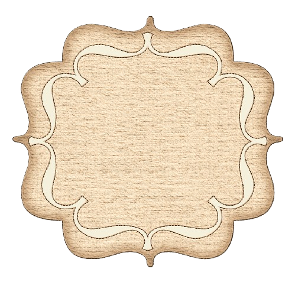

नाट्यगीतांच्या सुरात दडलेलं दु:ख आणि आनंद..!

नाट्यगीत संग्रह
नाव: बाळकृष्ण हरी कोल्हटकर
जन्म: 1877, महाराष्ट्र
मृत्यू: 1941, महाराष्ट्र
कार्यक्षेत्र : नाटककार, कवी, लेखक
पुरस्कार: तत्कालीन नाट्यपरिषद व साहित्य गौरव संगीत शैली: नाट्यसंगीत, शास्त्रीय संगीतावर आधारित नाटके

जन्म: 1877, महाराष्ट्र
मृत्यू: 1941, महाराष्ट्र
कार्यक्षेत्र : नाटककार, कवी, लेखक
पुरस्कार: तत्कालीन नाट्यपरिषद व साहित्य गौरव संगीत शैली: नाट्यसंगीत, शास्त्रीय संगीतावर आधारित नाटके